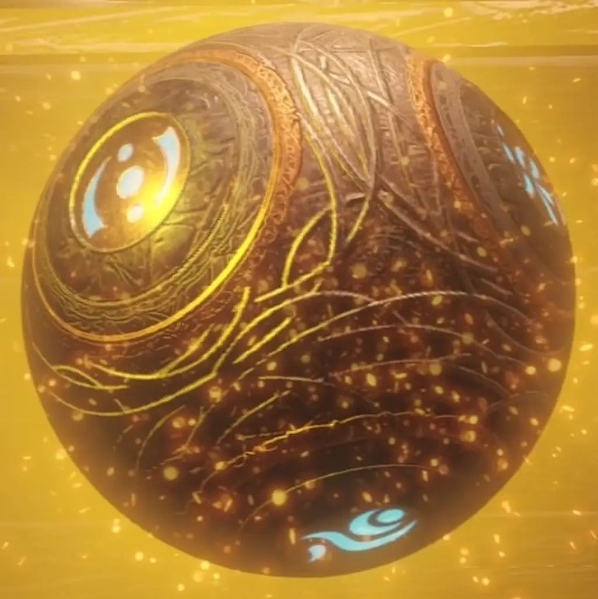

Musisz grać w trybie Cursed na poziomie co najmniej Tier 1 .

PRO TIP: Sugeruję użycie gumy Posmak, abyś po podniesieniu się nie stracił wszystkich swoich Perk-a-Cola.
PRO TIP: Archiwa sugerują użycie Maszyna Wojenna, aby szybko oczyścić teren z hordy.